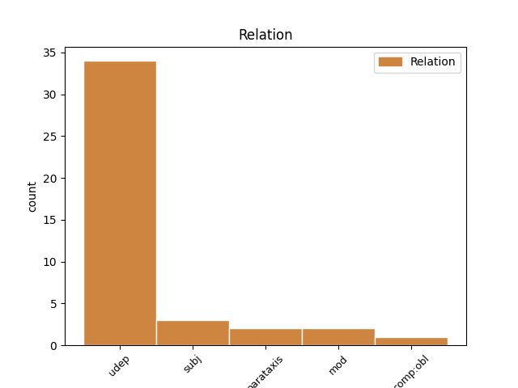
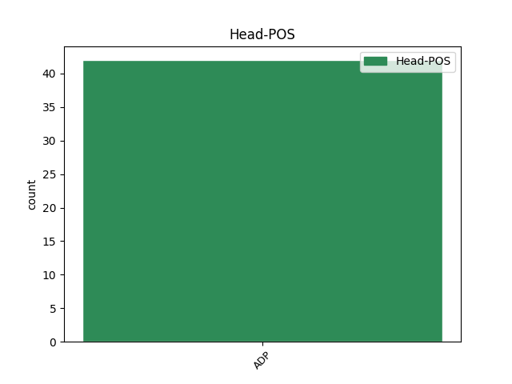
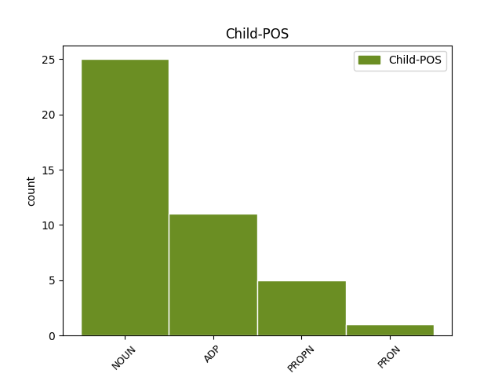

Distribution of features within this leaf



Agreement Rules sorted by frequency.
- When the dependent token is the underspecified dependency(udep) of the head token, and the head token is ADP and the dependent token is NOUN.
1 „ _ _ _ _ 0 _ _ _
2 Dar _ _ _ _ 0 _ _ _
3 prieš prieš ADP prl.G. AdpType=Prep|Case=Acc 0 _ _ _
4 kelerius _ _ _ _ 0 _ _ _
5 metus metai NOUN dkt.vyr.dgs.G. Case=Acc|Gender=Masc|Number=Plur 3 udep _ _
6 buvo _ _ _ _ 0 _ _ _
7 skiriamos _ _ _ _ 0 _ _ _
8 šios _ _ _ _ 0 _ _ _
9 skonio _ _ _ _ 0 _ _ _
10 rūšys _ _ _ _ 0 _ _ _
11 – _ _ _ _ 0 _ _ _
12 saldu _ _ _ _ 0 _ _ _
13 , _ _ _ _ 0 _ _ _
14 sūru _ _ _ _ 0 _ _ _
15 , _ _ _ _ 0 _ _ _
16 kartu _ _ _ _ 0 _ _ _
17 , _ _ _ _ 0 _ _ _
18 rūgštu _ _ _ _ 0 _ _ _
19 . _ _ _ _ 0 _ _ _
1 Ši _ _ _ _ 0 _ _ _
2 svarbi _ _ _ _ 0 _ _ _
3 monografija _ _ _ _ 0 _ _ _
4 išleista _ _ _ _ 0 _ _ _
5 Lietuvos _ _ _ _ 0 _ _ _
6 mokslo _ _ _ _ 0 _ _ _
7 tarybos _ _ _ _ 0 _ _ _
8 pagal pagal ADP prl.G. AdpType=Prep|Case=Acc 0 _ _ _
9 projektą projektas NOUN dkt.vyr.vns.G. Case=Acc|Gender=Masc|Number=Sing 8 subj _ _
10 „ _ _ _ _ 0 _ _ _
11 Gerovės _ _ _ _ 0 _ _ _
12 valstybės _ _ _ _ 0 _ _ _
13 raida _ _ _ _ 0 _ _ _
14 Lietuvoje _ _ _ _ 0 _ _ _
15 : _ _ _ _ 0 _ _ _
16 ištakos _ _ _ _ 0 _ _ _
17 , _ _ _ _ 0 _ _ _
18 būdingiausi _ _ _ _ 0 _ _ _
19 bruožai _ _ _ _ 0 _ _ _
20 ir _ _ _ _ 0 _ _ _
21 pagrindiniai _ _ _ _ 0 _ _ _
22 veiksniai _ _ _ _ 0 _ _ _
23 “ _ _ _ _ 0 _ _ _
24 ( _ _ _ _ 0 _ _ _
25 Nr _ _ _ _ 0 _ _ _
26 . _ _ _ _ 0 _ _ _
27 SIN-16/2010 _ _ _ _ 0 _ _ _
28 , _ _ _ _ 0 _ _ _
29 vadovė _ _ _ _ 0 _ _ _
30 doc _ _ _ _ 0 _ _ _
31 . _ _ _ _ 0 _ _ _
32 Jolanta _ _ _ _ 0 _ _ _
33 Aidukaitė _ _ _ _ 0 _ _ _
34 ) _ _ _ _ 0 _ _ _
35 finansuoto _ _ _ _ 0 _ _ _
36 tyrimo _ _ _ _ 0 _ _ _
37 , _ _ _ _ 0 _ _ _
38 kuris _ _ _ _ 0 _ _ _
39 buvo _ _ _ _ 0 _ _ _
40 atliktas _ _ _ _ 0 _ _ _
41 Lietuvos _ _ _ _ 0 _ _ _
42 socialinių _ _ _ _ 0 _ _ _
43 tyrimų _ _ _ _ 0 _ _ _
44 centre _ _ _ _ 0 _ _ _
45 , _ _ _ _ 0 _ _ _
46 pagrindu _ _ _ _ 0 _ _ _
47 . _ _ _ _ 0 _ _ _
1 Straipsnyje _ _ _ _ 0 _ _ _
2 nagrinėjamas _ _ _ _ 0 _ _ _
3 vienas _ _ _ _ 0 _ _ _
4 iš _ _ _ _ 0 _ _ _
5 ES _ _ _ _ 0 _ _ _
6 2004 _ _ _ _ 0 _ _ _
7 - _ _ _ _ 0 _ _ _
8 2006 _ _ _ _ 0 _ _ _
9 m _ _ _ _ 0 _ _ _
10 . _ _ _ _ 0 _ _ _
11 sanglaudos _ _ _ _ 0 _ _ _
12 politikos _ _ _ _ 0 _ _ _
13 reformos _ _ _ _ 0 _ _ _
14 tikslų _ _ _ _ 0 _ _ _
15 - _ _ _ _ 0 _ _ _
16 pritaikyti _ _ _ _ 0 _ _ _
17 ES _ _ _ _ 0 _ _ _
18 sanglaudos _ _ _ _ 0 _ _ _
19 politiką _ _ _ _ 0 _ _ _
20 prie prie ADP prl.K. AdpType=Prep|Case=Gen 0 _ _ _
21 dėl _ _ _ _ 0 _ _ _
22 ES _ _ _ _ 0 _ _ _
23 plėtros _ _ _ _ 0 _ _ _
24 pasikeitusios _ _ _ _ 0 _ _ _
25 tikrovės tikrovė NOUN dkt.mot.vns.K. Case=Gen|Gender=Fem|Number=Sing 20 comp:obl _ SpaceAfter=No
26 : _ _ _ _ 0 _ _ _
27 padidėjusių _ _ _ _ 0 _ _ _
28 išsivystymo _ _ _ _ 0 _ _ _
29 skirtumų _ _ _ _ 0 _ _ _
30 ES _ _ _ _ 0 _ _ _
31 viduje _ _ _ _ 0 _ _ _
32 . _ _ _ _ 0 _ _ _
1 Dvidešimtas _ _ _ _ 0 _ _ _
2 amžius _ _ _ _ 0 _ _ _
3 buvo _ _ _ _ 0 _ _ _
4 pamišęs _ _ _ _ 0 _ _ _
5 dėl dėl ADP prl.K. AdpType=Prep|Case=Gen 0 _ _ _
6 ateivių _ _ _ _ 0 _ _ _
7 iš iš ADP prl.K. AdpType=Prep|Case=Gen 5 udep _ _
8 kosmoso _ _ _ _ 0 _ _ _
9 . _ _ _ _ 0 _ _ _
1 Pavyzdžiui _ _ _ _ 0 _ _ _
2 , _ _ _ _ 0 _ _ _
3 autorė _ _ _ _ 0 _ _ _
4 pastebi _ _ _ _ 0 _ _ _
5 , _ _ _ _ 0 _ _ _
6 kad _ _ _ _ 0 _ _ _
7 Vakaruose _ _ _ _ 0 _ _ _
8 ir _ _ _ _ 0 _ _ _
9 Rytų _ _ _ _ 0 _ _ _
10 Europoje _ _ _ _ 0 _ _ _
11 skirtingai _ _ _ _ 0 _ _ _
12 suvokiamas _ _ _ _ 0 _ _ _
13 subjektyvumas _ _ _ _ 0 _ _ _
14 : _ _ _ _ 0 _ _ _
15 „ _ _ _ _ 0 _ _ _
16 Vakaruose _ _ _ _ 0 _ _ _
17 jis _ _ _ _ 0 _ _ _
18 suvokiamas _ _ _ _ 0 _ _ _
19 kaip _ _ _ _ 0 _ _ _
20 vertinimas _ _ _ _ 0 _ _ _
21 , _ _ _ _ 0 _ _ _
22 komentavimas _ _ _ _ 0 _ _ _
23 , _ _ _ _ 0 _ _ _
24 o _ _ _ _ 0 _ _ _
25 Rytuose _ _ _ _ 0 _ _ _
26 – _ _ _ _ 0 _ _ _
27 kaip _ _ _ _ 0 _ _ _
28 informacijos _ _ _ _ 0 _ _ _
29 beletrizacija _ _ _ _ 0 _ _ _
30 arba _ _ _ _ 0 _ _ _
31 publicistika _ _ _ _ 0 _ _ _
32 , _ _ _ _ 0 _ _ _
33 taigi _ _ _ _ 0 _ _ _
34 čia _ _ _ _ 0 _ _ _
35 subjektyvumas _ _ _ _ 0 _ _ _
36 tapatinamas _ _ _ _ 0 _ _ _
37 ne _ _ _ _ 0 _ _ _
38 tiek _ _ _ _ 0 _ _ _
39 su su ADP prl.Įn. AdpType=Prep|Case=Ins 0 _ _ _
40 asmens _ _ _ _ 0 _ _ _
41 , _ _ _ _ 0 _ _ _
42 kiek _ _ _ _ 0 _ _ _
43 su su ADP prl.Įn. AdpType=Prep|Case=Ins 39 mod _ _
44 ištiso _ _ _ _ 0 _ _ _
45 publicistikos _ _ _ _ 0 _ _ _
46 funkcinio _ _ _ _ 0 _ _ _
47 stiliaus _ _ _ _ 0 _ _ _
48 samprata _ _ _ _ 0 _ _ _
49 “ _ _ _ _ 0 _ _ _
50 ( _ _ _ _ 0 _ _ _
51 p _ _ _ _ 0 _ _ _
52 . _ _ _ _ 0 _ _ _
53 71 _ _ _ _ 0 _ _ _
54 ) _ _ _ _ 0 _ _ _
55 . _ _ _ _ 0 _ _ _
Disagree Examples:
1 Kitaip _ _ _ _ 0 _ _ _
2 sakant _ _ _ _ 0 _ _ _
3 , _ _ _ _ 0 _ _ _
4 nuolatos _ _ _ _ 0 _ _ _
5 siekta _ _ _ _ 0 _ _ _
6 priversti _ _ _ _ 0 _ _ _
7 SSRS _ _ _ _ 0 _ _ _
8 vadovybę _ _ _ _ 0 _ _ _
9 pradėti _ _ _ _ 0 _ _ _
10 derybinį _ _ _ _ 0 _ _ _
11 dialogą _ _ _ _ 0 _ _ _
12 dėl dėl ADP prl.K. AdpType=Prep|Case=Gen 0 _ _ _
13 Lietuvos _ _ _ _ 0 _ _ _
14 statuso _ _ _ _ 0 _ _ _
15 Sovietų _ _ _ _ 0 _ _ _
16 Sąjungoje sąjunga NOUN dkt.mot.vns.Vt. Case=Loc|Gender=Fem|Number=Sing 12 udep _ SpaceAfter=No
17 . _ _ _ _ 0 _ _ _
1 Labai _ _ _ _ 0 _ _ _
2 patrauklu _ _ _ _ 0 _ _ _
3 , _ _ _ _ 0 _ _ _
4 kad _ _ _ _ 0 _ _ _
5 jau _ _ _ _ 0 _ _ _
6 knygos _ _ _ _ 0 _ _ _
7 pradžioje _ _ _ _ 0 _ _ _
8 skaitytojas _ _ _ _ 0 _ _ _
9 supažindinamas _ _ _ _ 0 _ _ _
10 su _ _ _ _ 0 _ _ _
11 „ _ _ _ _ 0 _ _ _
12 svarbiausiomis _ _ _ _ 0 _ _ _
13 išvadomis _ _ _ _ 0 _ _ _
14 “ _ _ _ _ 0 _ _ _
15 ir _ _ _ _ 0 _ _ _
16 jau _ _ _ _ 0 _ _ _
17 iš _ _ _ _ 0 _ _ _
18 anksto _ _ _ _ 0 _ _ _
19 galima _ _ _ _ 0 _ _ _
20 pastebėti _ _ _ _ 0 _ _ _
21 , _ _ _ _ 0 _ _ _
22 kad _ _ _ _ 0 _ _ _
23 šis _ _ _ _ 0 _ _ _
24 tyrimas _ _ _ _ 0 _ _ _
25 nustatė _ _ _ _ 0 _ _ _
26 bendrąsias _ _ _ _ 0 _ _ _
27 lietuviškosios _ _ _ _ 0 _ _ _
28 migracijos _ _ _ _ 0 _ _ _
29 tendencijas _ _ _ _ 0 _ _ _
30 , _ _ _ _ 0 _ _ _
31 pavyzdžiui _ _ _ _ 0 _ _ _
32 , _ _ _ _ 0 _ _ _
33 kad _ _ _ _ 0 _ _ _
34 „ _ _ _ _ 0 _ _ _
35 ketinantys _ _ _ _ 0 _ _ _
36 sugrįžti _ _ _ _ 0 _ _ _
37 į _ _ _ _ 0 _ _ _
38 Lietuvą _ _ _ _ 0 _ _ _
39 migrantai _ _ _ _ 0 _ _ _
40 yra _ _ _ _ 0 _ _ _
41 daug _ _ _ _ 0 _ _ _
42 labiau _ _ _ _ 0 _ _ _
43 linkę _ _ _ _ 0 _ _ _
44 pabrėžti _ _ _ _ 0 _ _ _
45 asmeninius _ _ _ _ 0 _ _ _
46 sugrįžimo _ _ _ _ 0 _ _ _
47 motyvus _ _ _ _ 0 _ _ _
48 , _ _ _ _ 0 _ _ _
49 tokius _ _ _ _ 0 _ _ _
50 kaip _ _ _ _ 0 _ _ _
51 „ _ _ _ _ 0 _ _ _
52 namų _ _ _ _ 0 _ _ _
53 / _ _ _ _ 0 _ _ _
54 šeimos _ _ _ _ 0 _ _ _
55 bei _ _ _ _ 0 _ _ _
56 kultūrinės _ _ _ _ 0 _ _ _
57 aplinkos _ _ _ _ 0 _ _ _
58 ilgesys _ _ _ _ 0 _ _ _
59 “ _ _ _ _ 0 _ _ _
60 , _ _ _ _ 0 _ _ _
61 kurie _ _ _ _ 0 _ _ _
62 koreliuoja _ _ _ _ 0 _ _ _
63 , _ _ _ _ 0 _ _ _
64 pavyzdžiui _ _ _ _ 0 _ _ _
65 , _ _ _ _ 0 _ _ _
66 su su ADP prl.Įn. AdpType=Prep|Case=Ins 0 _ _ _
67 VDU _ _ _ _ 0 _ _ _
68 Socialinės _ _ _ _ 0 _ _ _
69 antropologijos _ _ _ _ 0 _ _ _
70 centro _ _ _ _ 0 _ _ _
71 atliktais _ _ _ _ 0 _ _ _
72 tyrimais _ _ _ _ 0 _ _ _
73 ( _ _ _ _ 0 _ _ _
74 Čiubrinskas Čiubrinskas PROPN dkt.tikr.vyr.vns.V. Case=Nom|Gender=Masc|Number=Sing 66 parataxis _ _
75 2011 _ _ _ _ 0 _ _ _
76 ) _ _ _ _ 0 _ _ _
77 . _ _ _ _ 0 _ _ _
1 Pavyzdžiui _ _ _ _ 0 _ _ _
2 , _ _ _ _ 0 _ _ _
3 Ispanijoje _ _ _ _ 0 _ _ _
4 dėl dėl ADP prl.K. AdpType=Prep|Case=Gen 0 _ _ _
5 genetiškai _ _ _ _ 0 _ _ _
6 modifikuotų _ _ _ _ 0 _ _ _
7 MON810 _ _ _ _ 0 _ _ _
8 rūšies _ _ _ _ 0 _ _ _
9 auginamų _ _ _ _ 0 _ _ _
10 kukurūzų _ _ _ _ 0 _ _ _
11 paplitimo _ _ _ _ 0 _ _ _
12 aplinkiniuose _ _ _ _ 0 _ _ _
13 laukuose laukas NOUN dkt.vyr.dgs.Vt. Case=Loc|Gender=Masc|Number=Plur 4 udep _ _
14 2004 _ _ _ _ 0 _ _ _
15 - _ _ _ _ 0 _ _ _
16 2007 _ _ _ _ 0 _ _ _
17 m _ _ _ _ 0 _ _ _
18 . _ _ _ _ 0 _ _ _
19 Aragono _ _ _ _ 0 _ _ _
20 autonominėje _ _ _ _ 0 _ _ _
21 dalyje _ _ _ _ 0 _ _ _
22 ekologinių _ _ _ _ 0 _ _ _
23 ūkių _ _ _ _ 0 _ _ _
24 plotas _ _ _ _ 0 _ _ _
25 sumažėjo _ _ _ _ 0 _ _ _
26 75 _ _ _ _ 0 _ _ _
27 proc _ _ _ _ 0 _ _ _
28 . _ _ _ _ 0 _ _ _
1 Tarptautiniai _ _ _ _ 0 _ _ _
2 donorai _ _ _ _ 0 _ _ _
3 per per ADP prl.G. AdpType=Prep|Case=Acc 0 _ _ _
4 konferenciją _ _ _ _ 0 _ _ _
5 Vašingtone Vašingtonas PROPN dkt.tikr.vyr.vns.Vt. Case=Loc|Gender=Masc|Number=Sing 3 udep _ _
6 Haičiui _ _ _ _ 0 _ _ _
7 pažadėjo _ _ _ _ 0 _ _ _
8 324 _ _ _ _ 0 _ _ _
9 mln _ _ _ _ 0 _ _ _
10 . _ _ _ _ 0 _ _ _
11 JAV _ _ _ _ 0 _ _ _
12 dolerių _ _ _ _ 0 _ _ _
13 finansinę _ _ _ _ 0 _ _ _
14 paramą _ _ _ _ 0 _ _ _
15 , _ _ _ _ 0 _ _ _
16 kuri _ _ _ _ 0 _ _ _
17 padės _ _ _ _ 0 _ _ _
18 šaliai _ _ _ _ 0 _ _ _
19 atsigauti _ _ _ _ 0 _ _ _
20 po _ _ _ _ 0 _ _ _
21 uraganų _ _ _ _ 0 _ _ _
22 padarytos _ _ _ _ 0 _ _ _
23 žalos _ _ _ _ 0 _ _ _
24 ir _ _ _ _ 0 _ _ _
25 apsirūpinti _ _ _ _ 0 _ _ _
26 maisto _ _ _ _ 0 _ _ _
27 produktais _ _ _ _ 0 _ _ _
28 . _ _ _ _ 0 _ _ _
1 Štai _ _ _ _ 0 _ _ _
2 keliems _ _ _ _ 0 _ _ _
3 fiziniams _ _ _ _ 0 _ _ _
4 asmenims _ _ _ _ 0 _ _ _
5 už už ADP prl.G. AdpType=Prep|Case=Acc 0 _ _ _
6 koncepciją _ _ _ _ 0 _ _ _
7 „ _ _ _ _ 0 _ _ _
8 Lietuva Lietuva PROPN dkt.tikr.mot.vns.V. Case=Nom|Gender=Fem|Number=Sing 5 subj _ _
9 - _ _ _ _ 0 _ _ _
10 drąsi _ _ _ _ 0 _ _ _
11 šalis _ _ _ _ 0 _ _ _
12 “ _ _ _ _ 0 _ _ _
13 sumokėta _ _ _ _ 0 _ _ _
14 60 _ _ _ _ 0 _ _ _
15 tūkst _ _ _ _ 0 _ _ _
16 . _ _ _ _ 0 _ _ _
17 litų _ _ _ _ 0 _ _ _
18 . _ _ _ _ 0 _ _ _